什么是行间距？
古时候我们使用印刷机来出来文字。印刷出来的每个字，都位于独立的一个块中。
行间距，即传说中控制两行文字垂直距离的东东。在 CSS 中，line-height 被用来控制行与行之间垂直距离。
不过，行间距与半行间距，还是取决于CSS中的line-height。
那么，如何来使用line-height呢？
默认状态，浏览器使用 1.0-1.2 line-height, 这是一个初始值。你可以定义line-height属性来覆盖初始值：
1 | <style> |
你可以有5种方式来定义line-height。
1.line-height可以被定义为：body{line-height:normal;}
2.line-height可以被定义为：body{line-height:inherit;}
3.line-height可以使用一个百分比的值 body{line-height:120%;}
4.line-height可以被定义为一个长度值(px,em等) body{line-height:25px;}
5.line-height也可以被定义为纯数字 body{line-height:1.2}
缩写 line-height
那5种line-height写法，可以在font属性中缩写。
line-height 的值紧跟着 font-size 值使用斜杠分开，如：<font-size>/<line-height>
实例：
1 | <style> |
计算 line-height
有些CSS属性是可继承的（inherited），从层叠的元素里传递下来。这样做是为了方便开发者，不再为后代元素重新设值。
line-height 的继承
百分比
1 | <style> |
这个值会被层叠下去的元素所继承。
所有继承下来的元素都会忽略本身的 font-size，而使用相同的，计算出来的那个值。
| element | font-size | line-height | 计算后的 line-height |
|---|---|---|---|
| body | 16px | 120% | 16*120px = 19.2 px |
| h1 | 32px | 继承计算后的值 | 19.2px |
| p | 16px | 继承计算后的值 | 19.2px |
| .footer | 12px | 继承计算后的值 | 19.2px |
line-height 不会随着 font-size 做相应的比例缩放。
长度
1 | <style> |
所有继承下来的元素都会忽略本身的 font-size，而使用相同的、继承的 line-height。
| element | font-size | line-height | 计算后的 line-height |
|---|---|---|---|
| body | 16px | 20px | 20 px |
| h1 | 32px | 继承计算后的值 | 20px |
| p | 16px | 继承计算后的值 | 20px |
| .footer | 12px | 继承计算后的值 | 20px |
值：normal
1 | <style> |
现在所有继承下来的元素 不会 忽略本身的 font-size，而使用基于 font-size 算出来的 line-height。
现在，line-height 会随着 font-size 做相应的比例缩放。
| element | font-size | line-height | 计算后的 line-height |
|---|---|---|---|
| body | 16px | normal | 16px * 约 1.2 = 约 19.2px |
| h1 | 32px | normal | 32px * 约 1.2 = 约 38.4px |
| p | 16px | normal | 16px * 约 1.2 = 约 19.2px |
| .footer | 12px | normal | 12px * 约 1.2 = 约 13.44px |
现在，line-height 会随着 font-size 做相应的比例缩放。
最好的方案：纯数字
1 | <style> |
所有继承下来的元素 不会 忽略本身的 font-size，而使用基于 font-size 算出来的 line-height。
line-height 会随着 font-size 做相应的比例缩放。
举栗子：
1 | <style> |
深入 line-height
从一段简单的 HTML 代码开始：
1 | <p> |
上面的代码在大多数浏览器下会被渲染成下图：
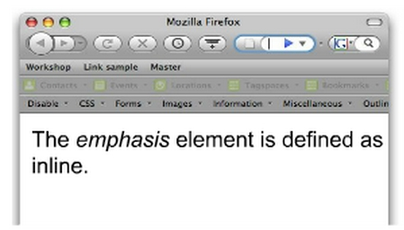
四种 boxes
这个例子中涉及 4 种 boxes。
containing boxes
这个例子中，段落 就是一种 containing box，包含了其他的 boxes。
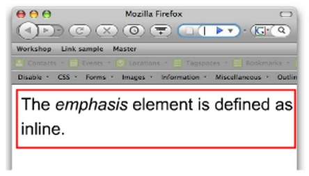
inline boxes
在段落内，有一系列的 inline-boxes
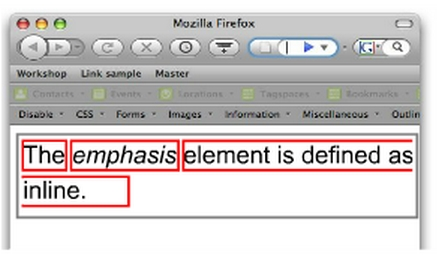
inline boxes 不会让内容显示成 块形式，而是 排成一行。
emphasis 元素 就是一种 inline boxes。
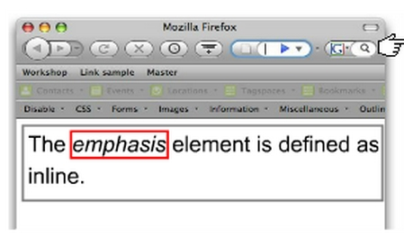
没有特别标签的 inline box 被称为 匿名 inline boxes
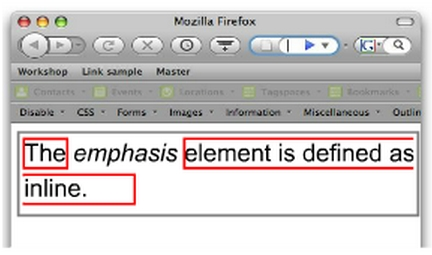
line boxes
inline boxes 在 containing box 里一个接一个组成了 line boxes
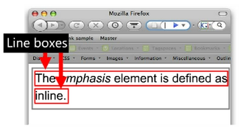
content area
它是围绕着文字的看不见的一种 box，它的高度取决于 font-size。
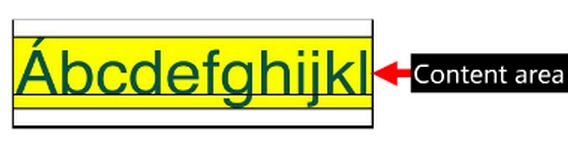
inline boxes 与 line-height
行高基于一则 简单小配方 应用在 inline boxes 上
line-height 和 font-size 的差别可以从下面的例子中看出：
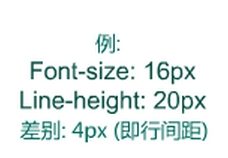
拆分行间距，来创建一个 半行间距
半行间距会被应用在 content area 的顶部和底部
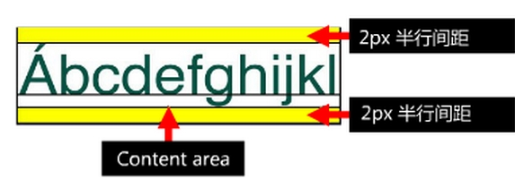
但是有时候，情况会有一点点复杂。
content area 包裹着 inline box 而半行间距位于 content area 的 上部和下部。
然而有时候 inline box 会小于 content area！
举例来说，如果 line-height 小于 font-size，inline box 会优先使用行高。
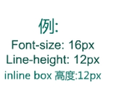
content area 会溢出 inline box 的顶部和底部，半行高会折叠起来，以保证 inline box 的高度。
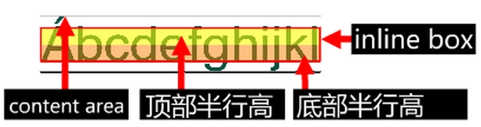
line box 的高度
line box 的高度取决于它内部最高的 inline box （或被替换元素）
最高的 inline box 可以是 匿名 inline box
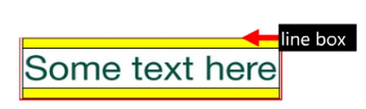
也可以是增加 line height 后的 inline box
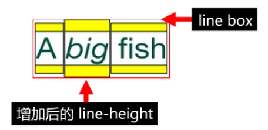
还可以是 font-size 更大的 inline box
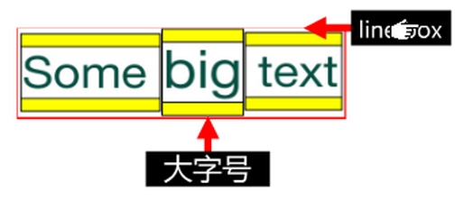
也可以是存在 上标或下标
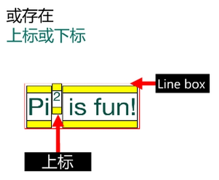
或存在 可替换元素，例如一张图片
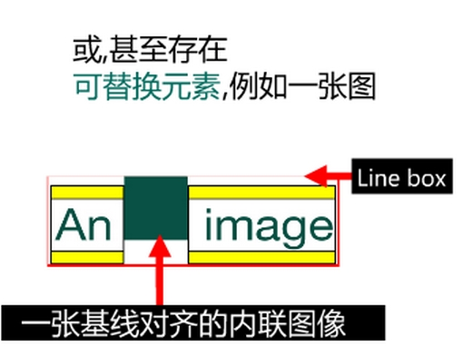